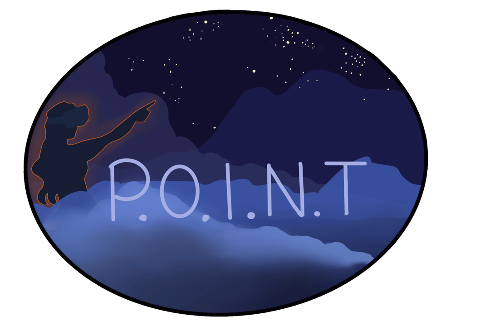
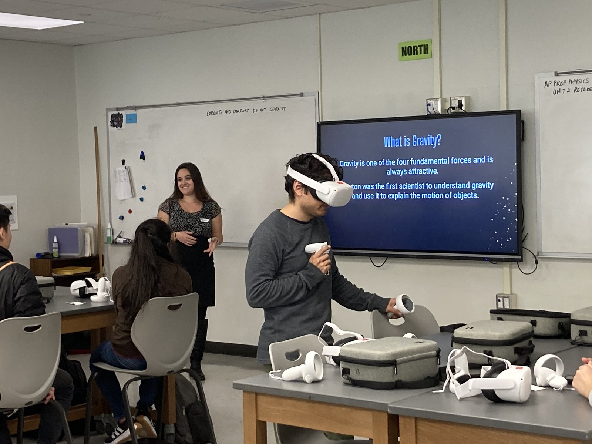
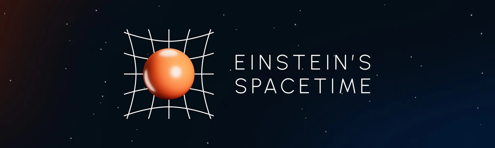

Founder and Director of POINT VR

In 2020 I founded the Physics Outreach and Instruction through New Technologies (POINT) project to use virtual reality (VR) to communicate physics concepts to middle and high school students. Since then this project has grown immensely, with upwards of 40 volunteer members and 1000 people reached. We have successfully developed two different VR simulations, published two papers (one in education research and one in computer visualization), and hosted demonstrations at local schools, summer camps, and other events for scientists and non-scientists alike. In my role as director of this organization I have mentored students, fostered interdisciplinary research collaborations, and given over 12 public talks. If you are interested in participating or using the resources we have developed, please see our webpage and send us an email!
I was featured in the UIUC physics magazine Condensate for this project. You can find that story here.

